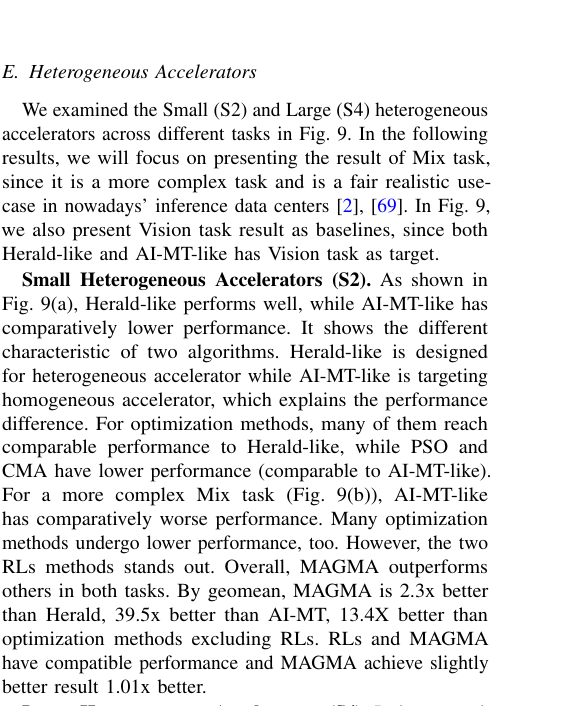
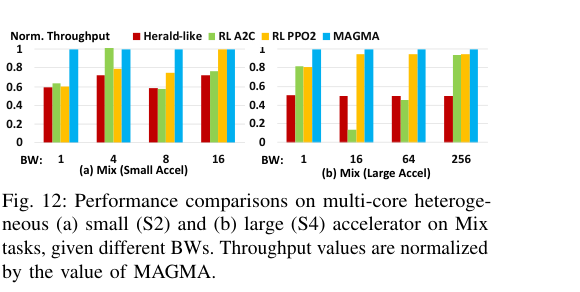
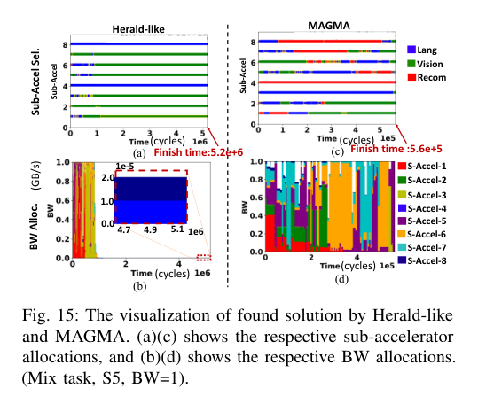
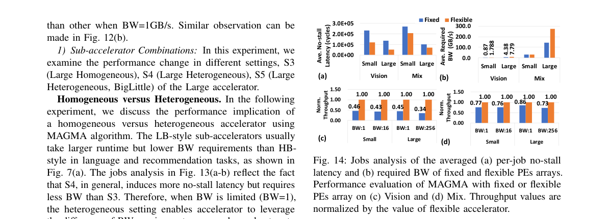
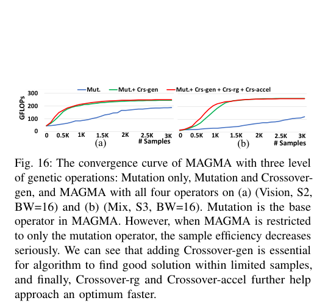

← Daily Papers
本报告由大模型自动生成，可能存在理解、归纳或数据转述错误；请以原论文为准。
MAGMA: An Optimization Framework for Mapping Multiple DNNs on Multiple Accelerator Cores Sheng-Chun Kao, Tushar Krishna · Proceedings - International Symposium on High-Performance Computer Architecture/Proceedings · 2022 · 原文 · PDF
报告模型：gemini-3.1-pro-preview / high
这是一篇详尽介绍《MAGMA: An Optimization Framework for Mapping Multiple DNNs on Multiple Accelerator Cores》的解析。本文按原论文逻辑顺序列出，重点阐述了多租户多核深度学习加速器中的全局映射问题，以及作者提出的编码框架与特定域遗传算法。
一、 核心背景与系统全貌 (Introduction & Background)
随着云端和边缘数据中心对人工智能算力的需求激增，现代深度学习加速器（DNN Accelerators）呈现出集成多个子加速器（Sub-accelerator） （或称计算核心、芯粒 Chiplet）的发展趋势。在此类庞大的硬件上，通常需要支持多租户（Multi-tenancy） ，即同时运行来自视觉、语言或推荐系统的多个不同的深度神经网络（DNN）模型任务，以提高硬件利用率。
为了理解本文的调度对象，我们需要首先建立目标硬件和软件系统的最小背景：
硬件层次与部件 ：
主存与主机 ：系统包含 CPU 主机和主存（如 DRAM 或 HBM）。系统带宽（System BW） ：这是本文最重要的物理硬件约束。系统带宽定义为主存带宽与主机到加速器接口（如 PCIe）带宽之间的较小值。所有的子加速器必须通过片上互连网络（NoC）共享这有限的系统带宽。子加速器（Sub-accelerator）与处理单元（PE） ：每个子加速器内部包含一个处理单元（PE）阵列。每个 PE 配备有乘加单元（MAC）以计算部分和，以及局部便签存储器（Local Scratchpad, 简称 SL ）用于存储权重、激活和部分和。全局便签存储器（Global Scratchpad, 简称 SG） ：每个子加速器拥有一个共享的 SG，负责从主存中预取下一批次的数据，并通过 NoC 分发给各个 PE。
数据的控制与流动 ：
分块（Tile） ：受限于 SG 的容量，一层庞大的神经网络无法一次性载入。数据被编译器或调度器切分为多个 Tile。Tile 是数据从主存移动到 SG 的基本数据传输单元。局部映射/数据流（Local-mapping / Dataflow） ：这是针对单个子加速器内部的软件设计选择，它决定了循环展开的顺序、空间并行维度以及 Tile 的大小。例如，是让权重驻留（Weight-Stationary）还是输出驻留（Output-Stationary）。全局映射（Global Mapping） ：这是本文所关注和试图解决的层次。 当同时存在多个独立的模型需要执行时，全局映射决定了宏观上的空间分配（哪个任务分配给哪个子加速器）和时间调度（在同一子加速器上各个任务的执行先后顺序）。
问题背景 ：当前的全局映射（如 AI-MT、Herald 等前期工作）高度依赖人工设计的启发式规则。由于深度学习模型具有截然不同的计算和访存特征（例如卷积层是计算密集型，而全连接层和自注意力层是内存带宽密集型），且底层子加速器可能是异构的（Heterogeneous，即不同核针对不同数据流进行了特化配置），人工规则很难适应高达 O ( 1 e 81 )
注：本文属于体系结构级别的任务调度和性能建模分析。作者使用了 MAESTRO 分析模型来评估架构参数（如 PE 数量、SRAM 大小）对延迟和能耗的影响，但并未将这些指标转化为物理版图、布线时序或热耗散等底层电子设计自动化（EDA）代价模型，也没有讨论与 EDA 物理综合流程的双向反馈。
二、 问题形式化 (Problem Formulation)
本文针对的是数据中心的批处理作业（Batched-job tasks） ，这类任务通常对吞吐量要求高，而对绝对的单次响应延迟不敏感。
作业（Job） ：在本文中，作业被严格定义为一个神经网络层中小批量（mini-batch）的激活值与权重参数的集合。由于在多租户批处理场景下，属于不同模型的 Job 之间，以及同一模型不同 mini-batch 的 Job 之间不存在严格的数据依赖关系，因此它们可以被灵活调度。组（Group） ：为了控制优化规模，主机端运行的轻量级控制程序会将排队的 Job 划分到多个没有任何依赖关系的 Group 中。组大小（Group size） 是作者设定的一个软件超参数（在后续实验中默认设为 100），它是调度器一次性处理的任务集合大小，直接决定了问题搜索空间的维度。映射器（Mapper） ：即本文要设计的自动化优化器，其目标是在给定的系统约束下，输出一个最优的全局映射策略，使该 Group 的吞吐量最大化。
三、 M3E 优化框架 (Optimization Framework)
面对庞大的离散搜索空间，作者首先搭建了一个评估与优化解耦的框架——M3E (Multi-workload Multi-accelerator Mapping Explorer) 。M3E 包含编码机制、成本评估模型和带宽分配器。
1. 搜索空间编码 (Encoding)
任何基于算法的优化器都需要先将物理动作转化为数学表达。作者将一个全局映射（包含子加速器选择和作业优先级）编码为长度是 2 × Group size
子加速器选择段（Sub-accelerator Selection Section） ：长度等于组大小。每个位置对应一个 Job，其存储的整数值代表该 Job 被分配到的子加速器 ID。作业优先级段（Job Prioritizing Section） ：长度等于组大小。每个位置对应一个 Job，其存储的浮点值在 [ 0 , 1 ]
2. 目标函数与硬件约束 (Objective and Constraints)
目标 ：最大化吞吐量（Throughput，单位为 GFLOPs，即每秒十亿次浮点运算）。这是通过最小化执行完整个 Group 所需的总时间来体现的。约束 ：即前文提到的**系统带宽（System BW）**限制。
3. 作业分析器与代价查找表 (Job Analyzer & Table)
为了避免在优化迭代中频繁调用底层的硬件成本模型（如 MAESTRO），M3E 会在预处理阶段建立一张分析查找表。对于每一个 Job 在特定的子加速器上的执行，提前计算并记录两个理想状态下的关键参数：
无阻塞延迟（No-stall Latency, L a t ：假设访存带宽无限大的情况下，完成该 Job 纯粹所需的计算周期数（单位为 cycles）。无阻塞带宽（No-stall Bandwidth, B W r e q ：为了保证计算核心一直处于忙碌状态（不受制于访存等待）所要求的最小带宽（单位为 GB/s）。
4. 动态带宽分配器 (BW Allocator)
在多核架构中，如果采用平均分配启发式规则，会导致运行计算密集型任务的核带宽过剩，而运行带宽密集型任务的核饥饿。因此，M3E 引入了一个基于贪心策略的仿真算法（如论文中的 Algorithm 1 所示）来动态评估候选映射的实际执行时间：
定义时间标量为 t t L a t t t B W t r e q t r e q B W s y s s y s C u r J o b s t = L a t t × B W t r e q t while 循环中评估时间推进：
如果当前所有并行作业的所需带宽总和 ∑ ( B W t r e q ) t < B W s y s B W t a l l o c = B W t r e q t a l l o c
如果总需求超过硬件约束，则按比例降级分配：B W t a l l o c = B W t r e q × B W s y s ∑ ( B W t r e q )
基于实际分配的带宽，计算出这批并行任务中最早完成的所需时间步进标量：r u n t i m e = min ( C u r J o b s t / B W t a l l o c ) t t + = r u n t i m e
这种基于带宽竞争的仿真模型，将抽象的编码序列转化为了可以衡量吞吐量的连续时间轴输出。
四、 MAGMA 优化算法 (Optimization Algorithm)
基于 M3E 框架，其实可以插入任何黑盒优化器（如强化学习 RL，或粒子群 PSO 等）。但由于搜索空间呈组合爆炸，常规优化器采样效率极低。为此，作者专门设计了 MAGMA ——一种引入了领域专有（Domain-aware）算子的定制化遗传算法（Genetic Algorithm, GA）。
在遗传算法中，一个个体（Individual）代表一种完整的全局映射方案；一串完整的编码序列称为 基因组（Genome） ，序列中的单个数值称为基因（Gene） 。算法通过变异和交叉产生下一代。作者认为，标准的 GA 随机交叉破坏了调度方案中隐藏的空间和时间依赖性，因此针对性地设计了四种操作（作者的算法设计选择）：
随机变异（Mutation） ：随机选中部分基因修改为其取值范围内的随机数。这为探索提供了基础扰动。基因组级别交叉（Crossover-gen） ：这是一种保留整体特征的交叉。它不再将分配基因组和优先级基因组混在一起处理，而是独立抽取父母的某一个完整基因组（例如仅仅交换优先级的数组）进行交叉点切割互换。这避免了因错误假设两组参数之间的位置相关性而带来的破坏。范围交叉（Crossover-rg） ：由于同一个 Job 的分配位置和它的优先级属于强相关特征，范围交叉会在两个基因组上选中相同的一段索引区间 同时进行互换。这使得一批任务的分配和时间顺序打包遗传给了下一代。加速器交叉（Crossover-accel） ：如果直接交叉，原先在某一个特定子加速器内部排好序的优秀流水线会被打散。该算子指定一个子加速器 ID，直接将父代中属于该加速器的所有 Job 的顺序规则原封不动地复制给子代。
此外，MAGMA 支持热启动（Warm-start） ，即当系统检测到当前进来的任务组与历史上处理过的任务组（如都是视觉为主，或都是语言为主）特征相似时，会复用历史较优的调度方案来初始化种群，从而大幅缩短收敛所需的采样周期。
五、 实验评估 (Evaluations)
作者基于真实的 PyTorch 网络模型提取了数百到数千个 Job，并在搭载不同内存带宽（从边缘设备的 1 GB/s 到高性能服务器的 256 GB/s）的模拟硬件上进行了评估。通过 MAESTRO 模型获取底层硬件性能反馈。
硬件设置 ：作者考虑了 Small（小阵列）和 Large（大阵列）两种体量，并区分了同构（Homogeneous，所有子加速器的数据流和缓冲配置相同）与异构（Heterogeneous，混合了高带宽需求的高并行度数据流 HB 和低带宽需求的低并行度数据流 LB）。结果分析 - 图 8（同构加速器）与 图 9（异构加速器） ：作者将 MAGMA 与 AI-MT（针对同构设计的人工启发式算法）、Herald（针对异构的人工启发式算法）、常见黑盒算法（PSO、DE、CMA-ES）以及强化学习算法（A2C、PPO2）放在相同的 10K 采样预算下进行对比。
在简单的纯视觉任务中，人工启发式算法表现尚可；但在复杂的混合任务（Mix）以及异构加速器设定下，启发式算法由于规则刚性，出现了严重的性能下降。
相比之下，强化学习虽然能找到不错的解，但 MAGMA 利用特制算子实现了极高的采样效率（Sample Efficiency），在全局范围内快速收敛到了更优的局部最优点。在图 9(d) 中，MAGMA 的吞吐量相较于表现最好的基线（强化学习和 Herald）分别提升了 1.3 倍和 1.7 倍。
Figure 9 · 原文 PDF 第 9 页
带宽环境的影响 - 图 12 和 图 15 ：当带宽极端受限（如 B W s y s = 1 GB/s 错开执行（Interleave） ，从而最大化了系统的全局吞吐量。
Figure 12 · 原文 PDF 第 10 页 
Figure 15 · 原文 PDF 第 11 页 灵活加速器（Flexible Accelerator）的潜力 - 图 14 ：作者还做了一项实验，探讨了如果底层硬件的 PE 阵列形状可以重新配置（比如在 FPGA 或 CGRA 架构中），而不增加额外的乘加算力，调度器是否能进一步压榨性能。结果表明，MAGMA 能够顺应柔性架构，找到不仅填满 PE 算力、还能平滑带宽占用的最优局部映射，使得灵活阵列架构的吞吐量超越了固定的 ASIC 阵列。
Figure 14 · 原文 PDF 第 11 页 消融实验（Ablation Study） ：图 16 证实了如果去掉任何一个作者定制的交叉算子（特别是 Crossover-gen 和 Crossover-accel），MAGMA 的采样收敛速度都会断崖式下跌，论证了定制算子的必要性。
Figure 16 · 原文 PDF 第 12 页
六、 总结与局限性 (Conclusions & Main Thread)
贯穿全文的主线 ：深度学习加速器正在从单一核心向多核演进，随之而来的多租户需求引出了一个崭新的难题——全局映射空间调度 。传统在单个核心内部调整“数据流”（局部映射）的方法或者人工设定的分配规则，无法应对多核之间因共享系统带宽而产生的隐性冲突。本文顺理成章地将此问题抽象为一个有带宽约束的联合优化问题，提出了 M3E 框架用于准确评估任务积压代价，并以此为基础，针对性地开发了 MAGMA 算法，用专有遗传算子保留调度的时空依赖特征，最终在有限搜索步数内取得了远超现有基线和通用黑盒算法的全局吞吐量。
关键假设与局限性 ：
本文的所有调度和优化都是建立在离线（Off-line）和 批处理作业（Batched-job tasks）的基础上的，其最高优化目标是吞吐量。这一结论 不能被过度推广到延迟敏感型（Latency-sensitive）的单流推理任务 中（例如自动驾驶的实时响应），因为这些场景不允许存在等待批次组装或离线搜索的开销。
文中所有的能耗与延迟反馈都依赖于 MAESTRO 解析代价模型。虽然 MAESTRO 能很好地捕捉访存体积和乘加周期的理论下限，但它缺乏真实的片上网络（NoC）路由拥塞模拟和主存控制器的动态时序分析。因此，论文中所预估的理论无阻塞带宽在映射到真实的硅片系统时可能会受到更严苛的物理限制。